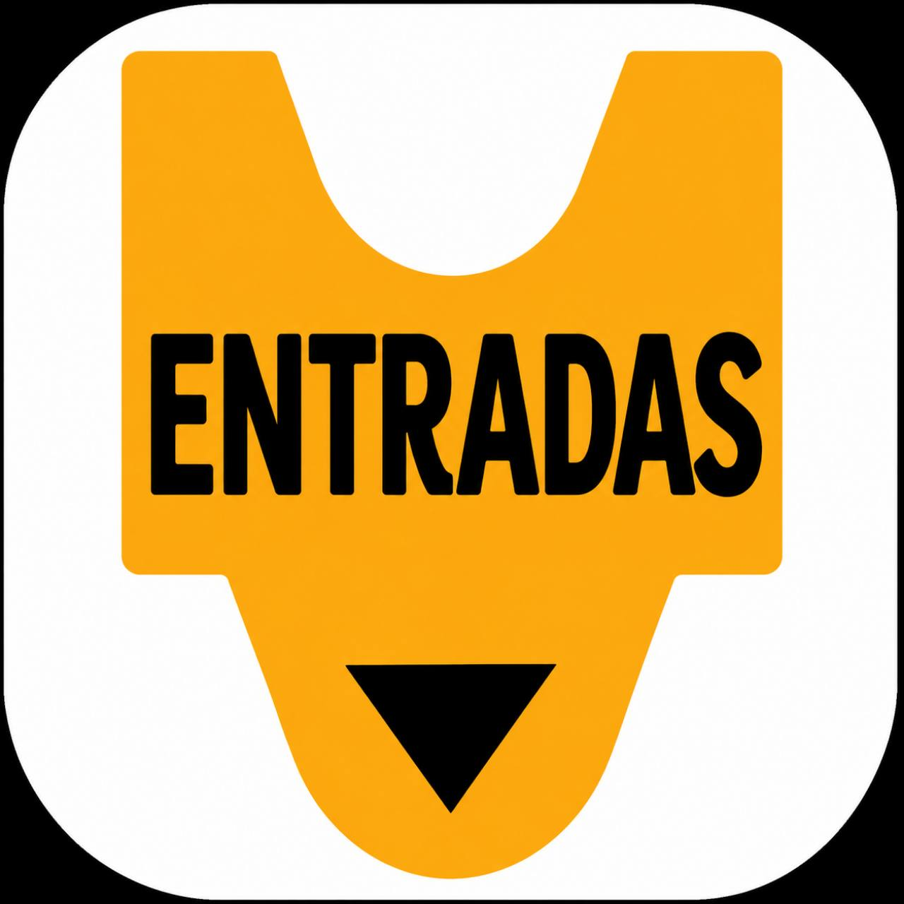

Entradas
Una aplicación para gestionar las reservas de plazas o entradas de las distintas actividades de un evento.
Los participantes pueden consultar las actividades disponibles y realizar su reserva directamente. La organización recibe la información de forma ordenada y puede controlar las plazas disponibles sin tener que gestionar cada solicitud de manera individual.